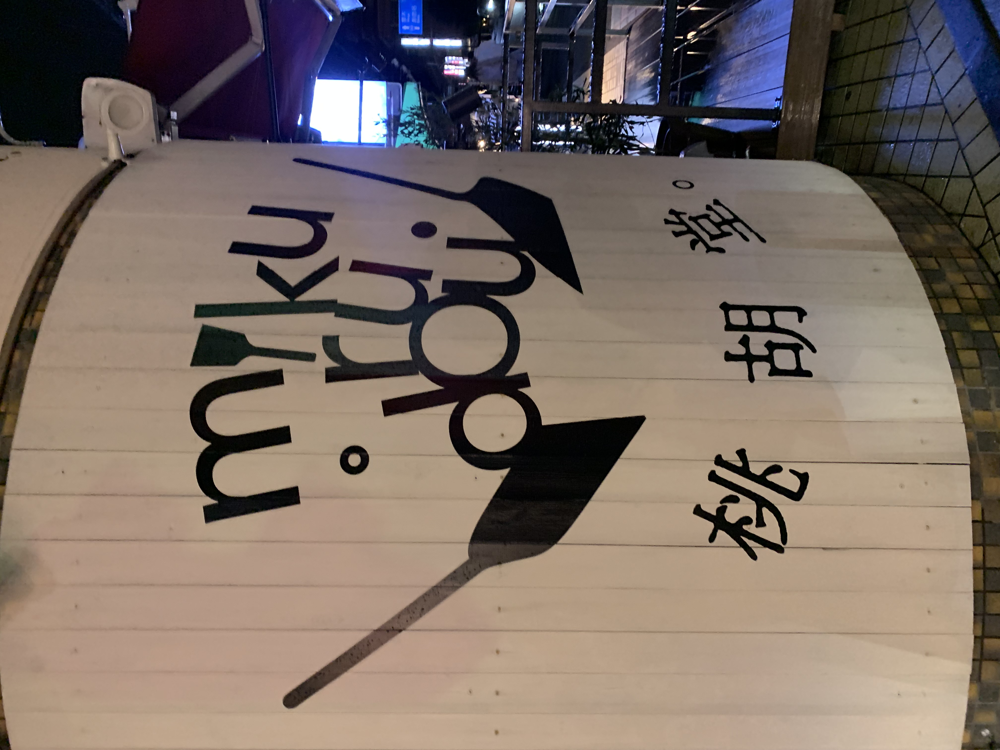
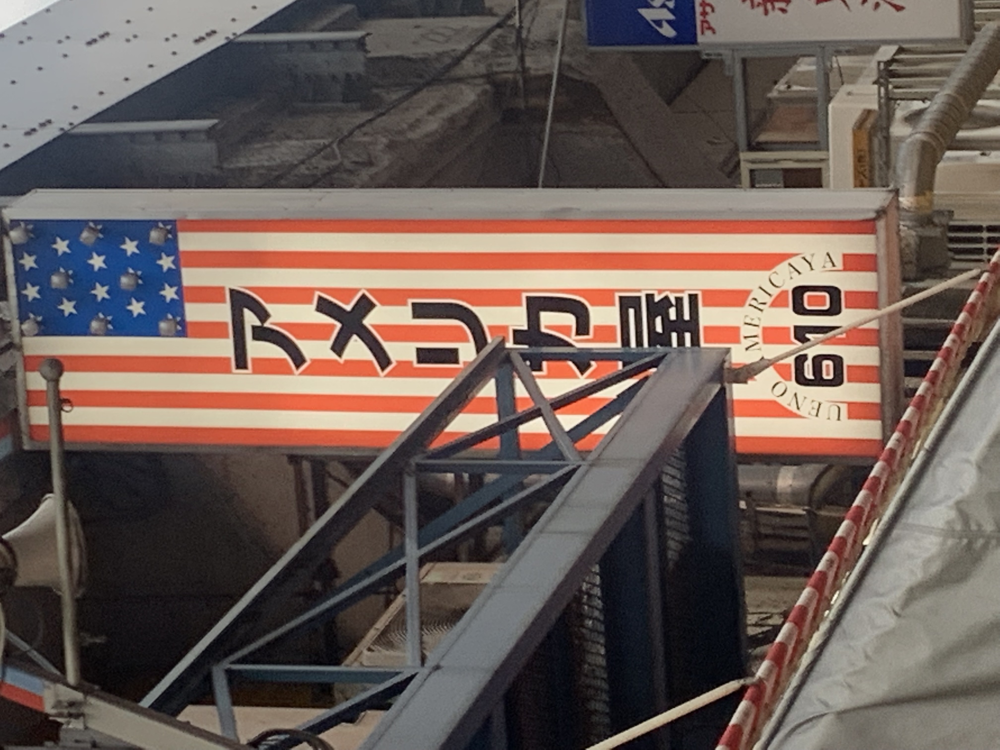
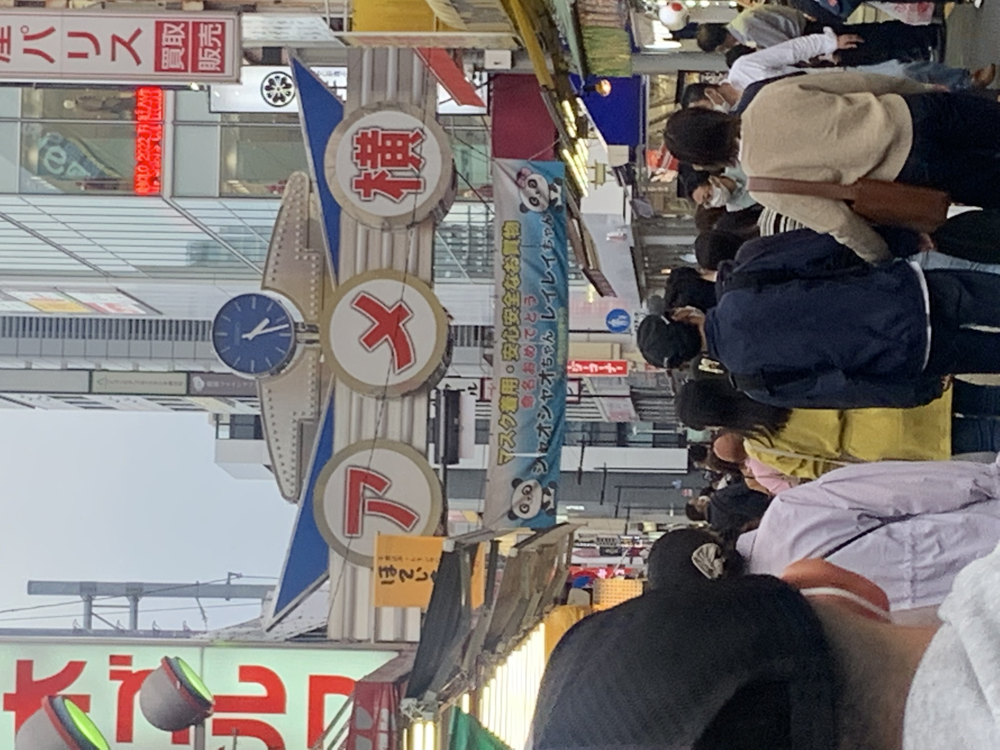

看板
画像を表示(30%)

この画像のお店は、私が現在住んでいるところの最寄り駅近くにあるお店です。9月25日に開店したばかりで、ずっと
気になっていました。このお店のロゴがおしゃれでかわいくて印象に残ったので10月初めぐらいに撮りました。お店の名前が
ぱっと見て「くるみどう」と読めそうなのに、「桃胡」で「みくる」と読むことが面白いなと思いました。鉄板焼き屋さん
というのが絵を見たら感じ取れるのもとても良いなと思いました。
画像を表示(30%)

この写真は私が10月8日に上野のアメ横商店街に行った時に撮った写真です。このお店は服屋さんで、アメリカンカジュアル
な服や革製品が売っていました。アメ横の商店街は自分自身初めて行ったのですが、魚がたくさん売っているイメージしか
なかったので、このようなザアメリカのような看板があることに驚きました。観光客が多く来る観光地で日本のもの以外を
売りにすると、いい意味で目立つことができるのだとわかりました。
画像を表示₍30％₎

この写真は見ての通り、上と同様の日に撮ったアメ横商店街の看板です。アメヤ横丁というのが正式名称らしいのですが、
昔、飴を売っていたことからこの名前がつけられました。叩き売りや呼び込みで活気溢れる商店街として有名であり、
そのイメージがこの看板のポップさに溢れているなと感じました。